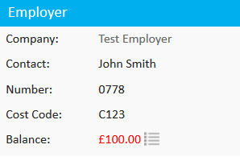
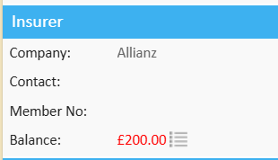
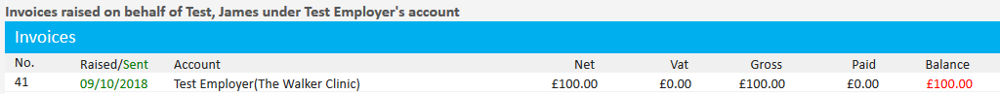

When a patient’s medical expenses are covered by an insurer or employer, invoices are generated and billed directly to that company. In Meddbase, you can easily access these invoices from the patient record to review outstanding balances and transaction details. This article explains how to locate and view invoices raised on behalf of a patient, ensuring you can track billing history and manage payments effectively.
This article explains how to view invoices raised on behalf of a patient to another company.
To view invoices raised on behalf of the patient to the patients insurer or employer, go to the patient home page and look for the insurer or employer box.
This box will display the outstanding fees relating to that patient.


To view details of the invoices raised against the patient, click on the notepad icon next to the balance. This will load all invoices relating to the patient.

Simply click on the invoice and the invoice window will load.
If you group invoices, then billing items relating to other patients will be displayed as Meddbase cannot split invoice.